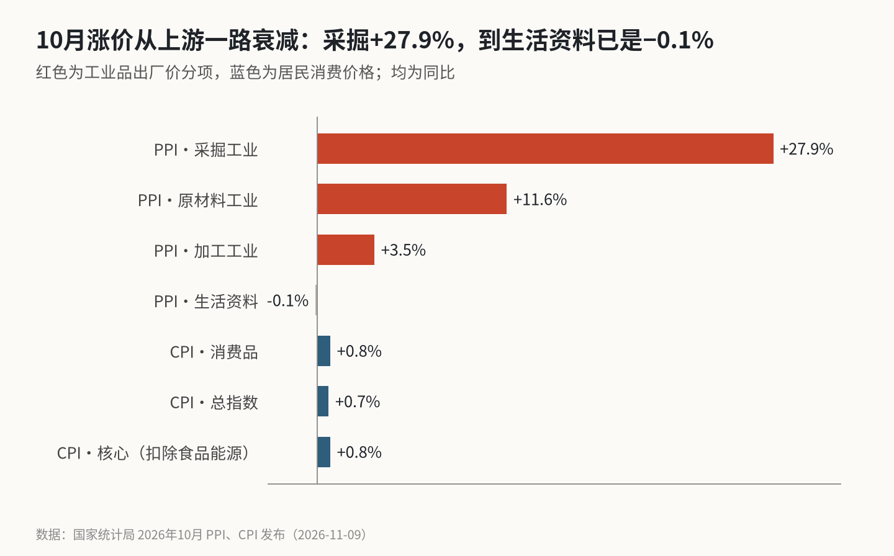
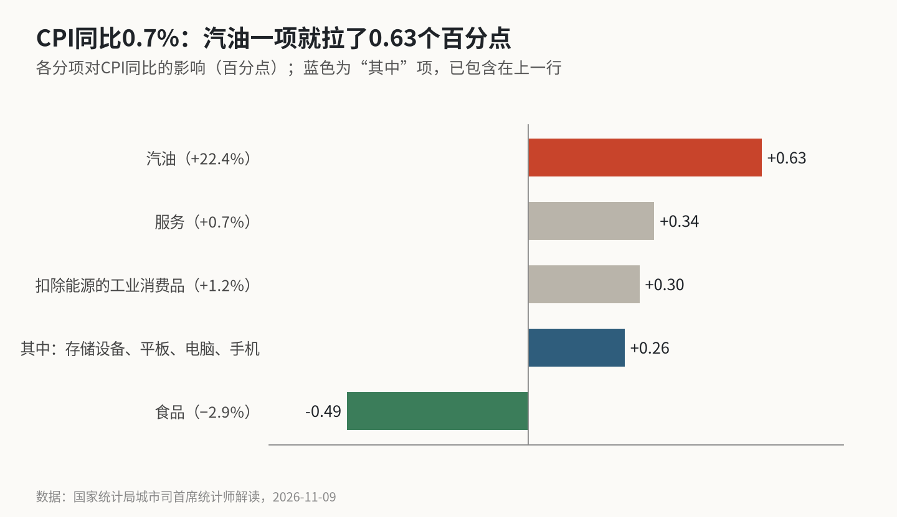

PPI涨5.7%，CPI只涨0.7%：涨价走到哪一步停下了
10月采掘工业出厂价同比涨27.9%，到生活资料已经是−0.1%。CPI的0.7%里，汽油一项贡献0.63个百分点，存储设备、电脑和手机四项又贡献0.26个点。
这里拆的是一条价格链：10月上游工业品的涨价，沿着“采掘→原材料→加工→生活资料→居民消费”往下走，每一步还剩多少。结论是，涨价几乎全部停在生产资料这一层；能穿到居民账单上的只有两条窄路，一条是汽油，一条是电子产品。食品一项把其余的都抵掉了，所以CPI看上去很平。
两个数字为什么差这么远
国家统计局11月9日公布，10月PPI同比上涨5.7%，比9月的5.0%又扩大0.7个百分点；X上流传的市场预期是5.3%，实际明显更高。同月CPI同比上涨0.7%，比9月回落0.2个百分点，低于0.8%的预期。核心CPI为0.8%。
两者之差约5个百分点。数字差这么大，原因在于两个指数量的东西不同：PPI量的是工厂卖给工厂的价格，CPI量的是居民买东西和服务的价格。上游涨得再多，只要中下游消化掉、或者居民买的东西里食品在跌，CPI就不会跟着动。
价格链：每往下走一层，涨幅少一大截

| 环节 | 10月同比 | 对PPI的影响 |
|---|---|---|
| 生产资料 | +7.4% | 约+5.77个百分点 |
| 采掘工业 | +27.9% | — |
| 原材料工业 | +11.6% | — |
| 加工工业 | +3.5% | — |
| 生活资料 | −0.1% | 约−0.03个百分点 |
| 耐用消费品 | +1.4% | — |
| 食品 | −1.6% | — |
从采掘的27.9%到加工的3.5%，再到生活资料的−0.1%，每走一层都大幅衰减。PPI的5.7%几乎全部来自生产资料，生活资料是在拖后腿。
涨价集中在哪些行业，统计局也列了：煤炭开采和洗选业涨36.6%，石油和天然气开采业涨35.0%，石油煤炭及燃料加工涨29.9%，有色冶炼涨18.6%，化学原料和制品涨16.4%。连同有色矿采、燃气、电气机械、计算机通信电子，这9个行业合计拉动PPI约6.14个百分点，比PPI本身还多；酒饮料、医药、非金属矿物、汽车、电力这5个行业又拉低约0.60个点。
还有一个数字值得放在旁边：工业生产者购进价格同比涨7.9%，比出厂价高2.2个百分点。燃料动力类购进价格涨18.6%，化工原料类涨16.8%。工厂买进来的东西比卖出去的东西涨得更快，中间环节的利润在被压缩。
穿到居民账单上的两条路

CPI这边，上游涨价穿到居民账单上的只有两条路：汽油和电子产品。统计局的解读把影响拆得很细：
- 汽油涨22.4%，影响CPI上涨约0.63个百分点，带动能源价格涨幅从9月的7.3%扩大到9.9%；
- 扣除能源的工业消费品涨1.2%，影响约+0.30个点。其中数据存储设备涨45.4%，平板电脑涨29.3%，计算机涨23.0%，手机涨16.7%，四项合计约+0.26个点；
- 服务涨0.7%，影响约+0.34个点；
- 食品跌2.9%，影响约−0.49个点。鲜菜跌16.9%，猪肉跌8.6%，鲜果跌3.8%。
这几项加起来约0.78个点，和0.7之间的差，来自统计局各分项各自取整，以及没有单独列出的项目，这里没有再往下拆。
两条路的性质不一样。汽油是国际油价直接传过来的，统计局的说法是“受国际市场价格变动影响”。电子产品的涨价领头的是存储设备，统计局在PPI部分把计算机通信电子等行业的涨价归因于人工智能带动的需求增加，消费电子的成本跟着上来。两者都不是国内需求变旺的结果。
把汽油和四类电子产品拿掉，剩下的部分大约是0.7−0.63−0.26≈−0.2个百分点。这只是一个粗略的拆法，但方向很清楚：如果不算这两条窄路，居民消费价格整体是在下降的。
上游利润与托市资金
也有人从这组数据里看到积极的一面：上游利润在修复，托市资金在进场。
彭博把5.7%称为疫情之后的最高水平，上游企业的利润在修复，煤炭、有色和化工的出厂价都在涨。统计局把部分行业的上涨归因于“产能治理有序推进”和“人工智能快速发展”，非金属矿物制品业环比上涨0.8%，汽车制造业价格在连降3个月后转为持平。
股市这边，彭博的数据显示10月有11只A股ETF各自获得超过10亿美元资金流入，合计441.5亿美元，被普遍解读为“国家队”在托市。证券时报的说法是，近期稳定市场的措施会是长期安排。
这些都是真实的变化。它们改善的是上游和资本市场，暂时还没有改变居民消费价格的方向。
总体判断、风险与机会
10月的物价是一张“上游热、下游冷”的结构图：PPI的高涨幅主要是能源和有色的输入性涨价，CPI里看得见的涨价也来自汽油和存储芯片，内需本身没有出现明显的回暖。
风险在中游。购进价格比出厂价高2.2个百分点，加工企业被两头挤压，如果上游价格继续涨而终端提不了价，利润表会先出问题。另一个风险是油价：如果国际油价回落，汽油那0.63个点会很快消失，CPI可能比现在更低。
机会在于涨价确实在往下游走，只是速度很慢、范围很窄。电子产品已经在居民账单上体现出来；如果服务价格和核心CPI能稳住在0.8%附近，而食品跌幅收窄，CPI会自然抬升。
能说明传导是否打通的，是三组数据：生活资料出厂价能否转正、核心CPI能否回到1%以上、购进价与出厂价的差是否收窄。三组里只要动了一组，“上游热、下游冷”的格局才开始松动。
免责声明：本文数据来自国家统计局发布及解读，市场预期取自公开快讯，剔除测算为粗略估计，不构成任何投资建议。
X 上怎么看
结论 · 偏空分歧：多数认为传导不畅、中游承压，少数看重上游利润修复与托市
▲ 看多3 位
▼ 看空3 位
● 分歧或中性6 位
观点为 X 用户当日公开帖子的中文摘要，忠于原文但有删减；标「未核实」的为预测、个人推测或单一来源说法。立场为人工判断。
数据来源
- PPI、购进价格、生产资料与生活资料分项、各行业涨幅与拉动、CPI总指数、核心CPI、消费品与服务价格均来自国家统计局11月9日发布。
- 汽油、扣除能源的工业消费品、四类电子产品、服务、食品对CPI同比的影响来自统计局城市司首席统计师的解读。
- 市场预期（PPI 5.3%、CPI 0.8%）来自财经快讯账号的发布，华尔街日报中文网的报道方向一致，但未给出具体数值。
- “疫情之后最高水平”为彭博的表述，经X上转述；ETF资金流入数据为X上转述的彭博数据；稳定市场措施的说法来自证券时报，经X上转述。
- 剔除汽油和电子产品后的CPI为本文粗略测算，未考虑权重变化和交叉项。
- https://www.stats.gov.cn/sj/zxfbhjd/202611/t20261109_1965794.html
- https://www.stats.gov.cn/sj/zxfb/202611/t20261109_1965795.html
- https://www.stats.gov.cn/sj/zxfbhjd/202611/t20261109_1965796.html
- https://x.com/fxtrader/status/2119604121779229068
- https://x.com/ChineseWSJ/status/2119633664820568240
- https://x.com/C_Barraud/status/2119683561825693698
- https://x.com/StockMKTNewz/status/2119888240727724105
- https://x.com/C_Barraud/status/2119683292123259164